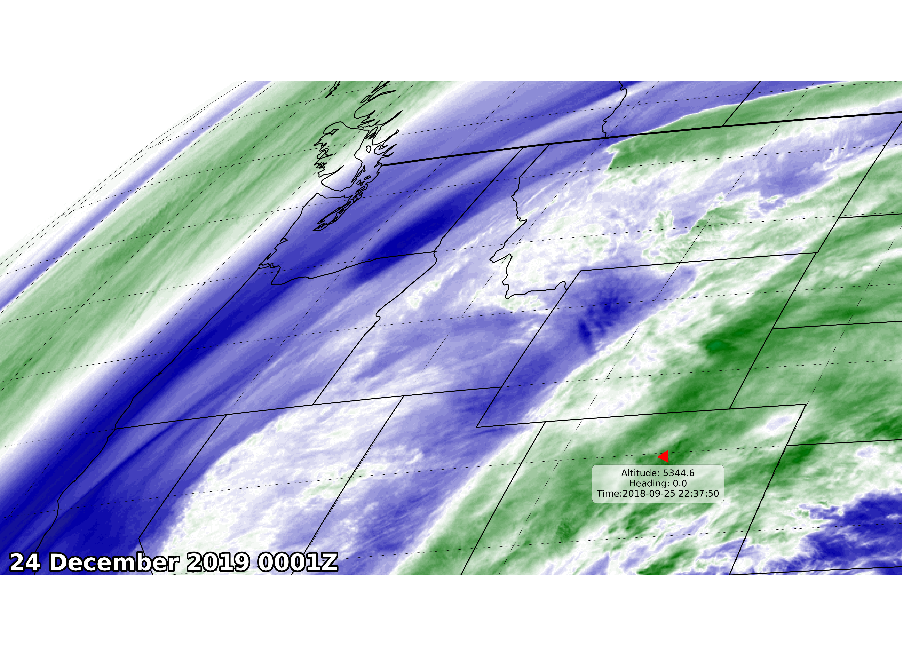

Note
Click here to download the full example code
GOES Aircraft Example¶
This example plots the most recent GOES-16 data with an overlay of the current position of the NCAR C130 research aircraft. It also demonstrates projecting vectors into map coordinates and matplotlib marker manipulation.
from datetime import datetime
import json
import urllib.request
import cartopy.crs as ccrs
import cartopy.feature as cfeature
from matplotlib import patheffects
import matplotlib.pyplot as plt
import metpy # noqa: F401
import metpy.calc as mpcalc
from metpy.plots.ctables import registry
from metpy.units import units
import numpy as np
from siphon.catalog import TDSCatalog
import xarray as xr
from xarray.backends import NetCDF4DataStore
def get_plane_data():
"""Get JSON data from NCAR aircraft."""
endpoint_url = 'https://www.eol.ucar.edu/flight_data/C130/position.json'
with urllib.request.urlopen(endpoint_url) as f:
jstring = f.read()
payload = json.loads(jstring.decode('utf-8'))
data = {'latitude': float(payload['lat']),
'longitude': float(payload['lon']),
'altitude': float(payload['alt']),
'heading': float(payload['head']),
'time': payload['timestamp']}
return data
def get_goes_image(date=datetime.utcnow(), channel=8, region='CONUS'):
"""Return dataset of GOES-16 data."""
cat = TDSCatalog('https://thredds.ucar.edu/thredds/catalog/satellite/goes/east/products/'
'CloudAndMoistureImagery/{}/Channel{:02d}/{:%Y%m%d}/'
'catalog.xml'.format(region, channel, date))
ds = cat.datasets[-1] # Get most recent dataset
ds = ds.remote_access(service='OPENDAP')
ds = NetCDF4DataStore(ds)
ds = xr.open_dataset(ds)
return ds
ds = get_goes_image()
data = get_plane_data()
# Parse out the projection data from the satellite file
dat = ds.metpy.parse_cf('Sectorized_CMI')
proj = dat.metpy.cartopy_crs
# Pull out what we need from the GOES netCDF file
x = dat['x']
y = dat['y']
# Make the plot
fig = plt.figure(figsize=(1.375 * 40, 40))
ax = fig.add_subplot(1, 1, 1, projection=proj)
plt.subplots_adjust(left=0, bottom=0, right=1, top=1, wspace=0, hspace=0)
wv_norm, wv_cmap = registry.get_with_range('WVCIMSS_r', 195, 265)
im = ax.imshow(dat, extent=(x.min(), x.max(), y.min(), y.max()),
origin='upper')
im.set_cmap(wv_cmap)
im.set_norm(wv_norm)
ax.add_feature(cfeature.BORDERS, linewidth=8, edgecolor='black')
ax.add_feature(cfeature.STATES.with_scale('50m'), linestyle='-',
edgecolor='black', linewidth=4)
timestamp = datetime.strptime(ds.start_date_time, '%Y%j%H%M%S')
text_time = ax.text(0.01, 0.01, timestamp.strftime('%d %B %Y %H%MZ'),
horizontalalignment='left', transform=ax.transAxes,
color='white', fontsize=100, weight='bold')
outline_effect = [patheffects.withStroke(linewidth=15, foreground='black')]
text_time.set_path_effects(outline_effect)
ax.set_extent([-124.5, -105, 38.5, 50])
# Transform plane heading to a map direction and plot a rotated marker
u, v = mpcalc.wind_components(1 * units('m/s'),
data['heading'] * units('degrees'))
u, v = proj.transform_vectors(ccrs.PlateCarree(), np.array([data['longitude']]),
np.array([data['latitude']]), np.array([u.m]),
np.array([v.m]))
map_direction = -mpcalc.wind_direction(u * units('m/s'), v * units('m/s')).to('degrees')
map_direction = map_direction[0].m
ax.scatter(data['longitude'], data['latitude'],
transform=ccrs.PlateCarree(),
marker=(3, 0, map_direction),
color='red',
s=4000)
ax.text(data['longitude'], data['latitude'] - 0.3,
'Altitude: {}\nHeading: {}\nTime:{}'.format(data['altitude'],
data['heading'],
data['time']),
transform=ccrs.PlateCarree(), fontsize=40,
ha='center', va='top',
bbox={'facecolor': 'white', 'edgecolor': 'black',
'boxstyle': 'round,pad=0.5', 'alpha': 0.6})
ax.gridlines(linestyle=':', color='black', linewidth=2)
plt.savefig('sat_image.png')
Total running time of the script: ( 0 minutes 12.048 seconds)